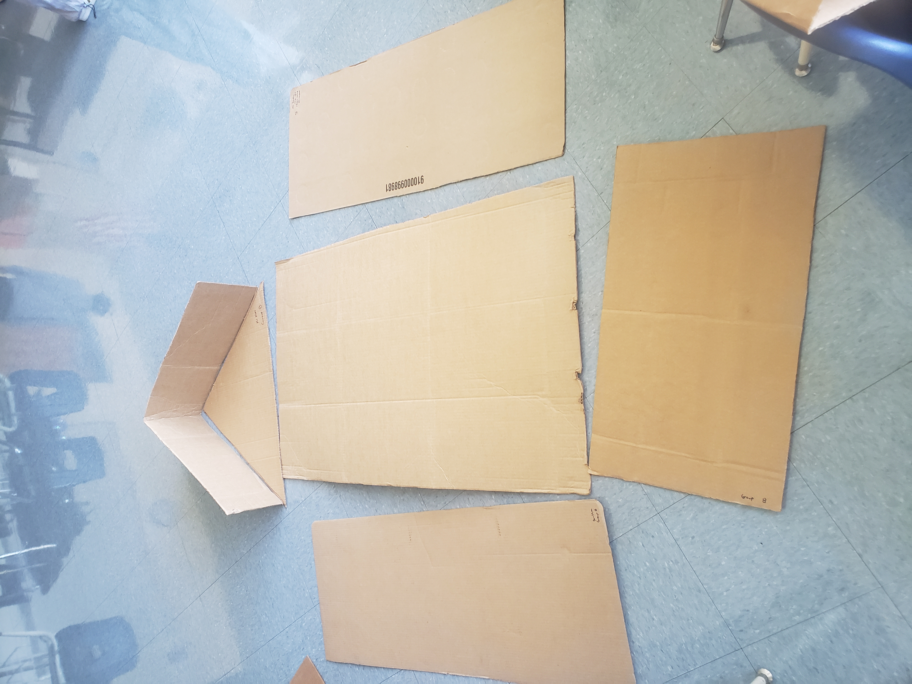
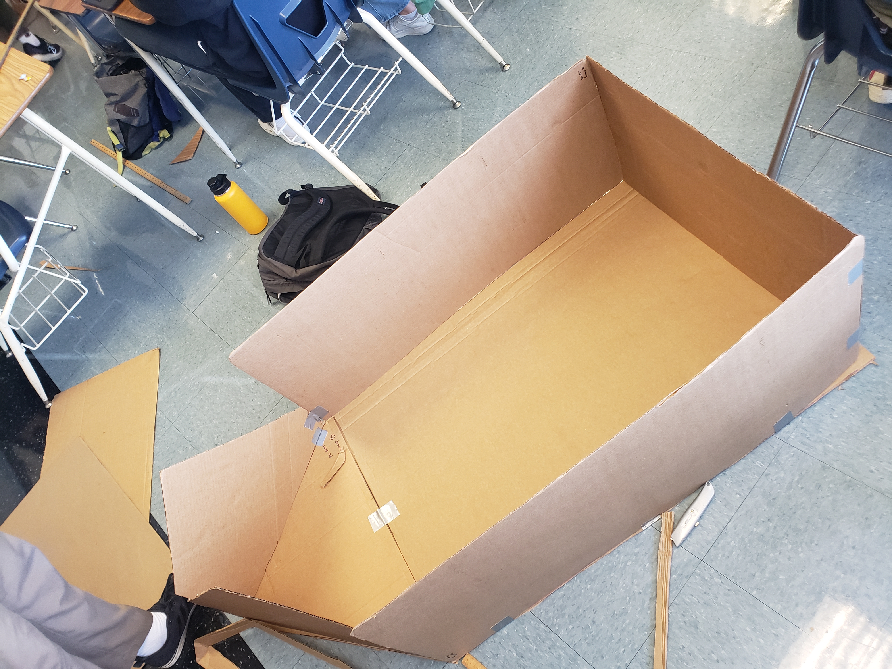
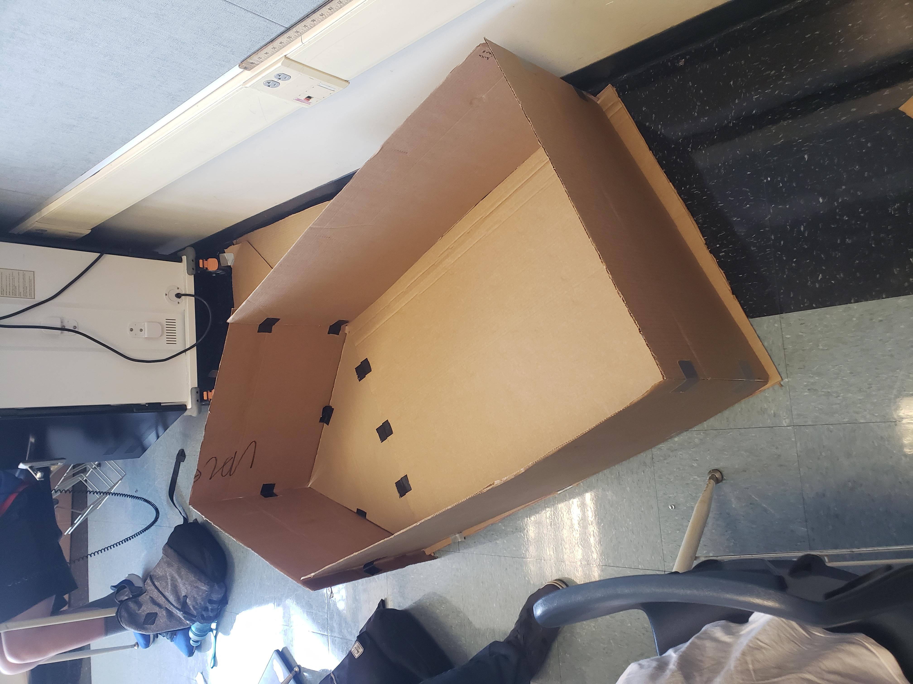

*4/3/2023 - 4/7/2023*

This week we began designing a cardboard boat. It was required that the
boat could hold two people and float across the school pool. We created
sketch and a CAD. We went with a pentagonal shape for the boat elongated
to hold two people, and with a pointed tip to decrease water resistance.
*4/17/2023 - 4/21/2023*

This week we began creating the actual boat out of cardboard. We cut out the needed
components using the dimensions in our CAD. We also had Jayden and I sit on the floor
of the boat in order to gauge how big the boat needed to be. We also had to consider
the fact that our arms would have to be able to reach over the sides in order to paddle
when determining the height of the boat sides.
We had not yet gotten duct tape to use so we couldn't put it together.
*4/24/2023 - 4/28/2023*


This week we put our cardboard boat together. We had not gotten our full roll
of duct tape yet so we only formed the shape of out boat without reinforcing it
as a final product. At first we tried making the first part out of the leftover
scraps(left image) but it fell apart and was too disconnected, so we got extra cardboard to make a proper
and sleeker looking boat(right image).